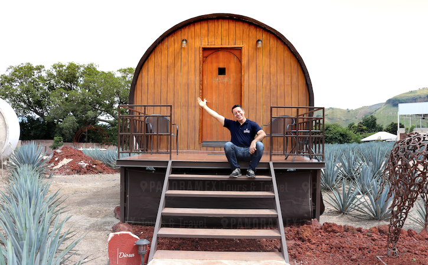

Historia y tradición
Tequila tiene una importante tradición relacionada con el cultivo del agave y la elaboración de la bebida que lleva el mismo nombre.
La cultura del agave forma parte importante de la identidad de la región y de sus habitantes.
Datos Generales e Historia
Ubicación: Se localiza en la región Valles de Jalisco, a unos 60 km de Guadalajara,
asentado a las faldas del Volcán de Tequila y cerca del cañón del Río Grande.
Significado: Su nombre proviene del náhuatl Tecuilan, que se interpreta como "lugar de tributos"
o "lugar donde se corta y se trabaja".
Nombramientos: Fue declarado Pueblo Mágico en el año 2003, y
en 2006 la UNESCO declaró al paisaje agavero y las antiguas instalaciones industriales
como Patrimonio Cultural de la Humanidad.
